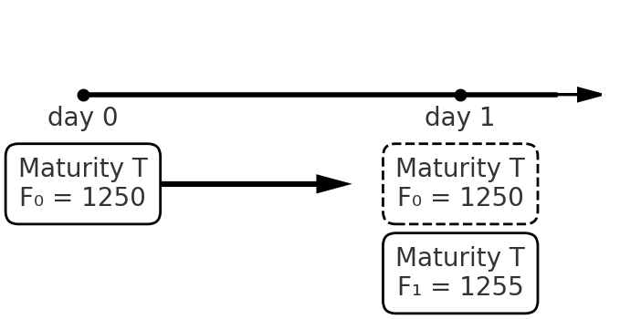
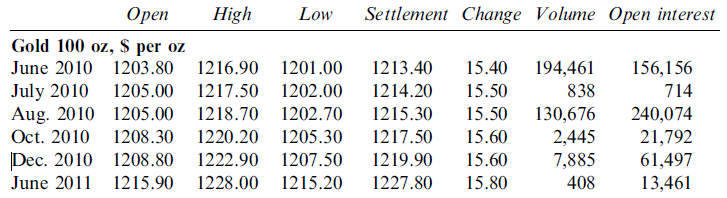

[1] "CL=F"BUSS386 Futures and Options
| Specification | Details |
|---|---|
| Contract Name | E-mini S&P 500 Futures |
| Exchange | CME Group |
| Ticker Symbol | ES |
| Contract Size | 50 times the S&P 500 Index |
| Tick Size | 0.25 index points |
| Tick Value | $12.50 per tick |
| Settlement Method | Cash settlement |
| Expiration Months | March, June, September, December |
| Trading Hours | Sunday-Friday 5:00 PM - 4:00 PM (CT) with a 1-hour break |
| Initial Margin | $12,000 (varies by broker) |
| Maintenance Margin | $10,800 (varies by broker) |
Source: CME Group
Long vs. short position
e.g. Long position of Futures on 100,000 bushels of corn for December delivery
Entering long/short position of futures contract costs nothing (cf. buying stock or bond).
Futures price changes as a result of supply and demand.
Futures vs. Spot price
Def. Forward contract is an agreement to buy or sell an asset at a certain time in the future for a certain price.
Forward price: the promised price to trade
How is forward different from futures?
Forward is traded in the OTC market, while futures is traded in the exchange.
Forward is settled once on the delivery date, while futures is settled every day.
Futures have greater liquidity but less flexibility than forwards
In futures, counterparty credit risk is eliminated
Suppose that a food company takes a long position of forward contract on corns for delivery in three months. The forward price is $3.70 per bushel.
Three month later, the spot price turns out to be …
$3.75 per bushel:
Payoff on the forward is $(3.75 - 3.70) = 0.05
$3.67 per bushel:
Payoff on the forward is $(3.67 - 3.70) = -0.03
Forward/Futures enables an investor to lock in the price for future transaction, thus reducing uncertainty or risk.
\[ \left\{ {\begin{array}{lc} \text{long position: } ~ & S_T - F \\ \text{short position: } ~ & F - S_T \end{array} } \right. \]
where \(S_T\) is the spot price of the underlying asset at the expiration.
Suppose we enter a futures contract that will expire on date \(T\).
Unlike forward, the futures will be settled every day.
e.g. Suppose we long futures on gold on day 0 when the futures price is $1,250 per ounce.
| Day | Futures price | Daily gain |
|---|---|---|
| 0 | 1,250 | |
| 1 | 1,255 | ? |
| 2 | 1,248 | ? |
| 3 | 1,242 | ? |
| \(\vdots\) | \(\vdots\) | \(\vdots\) |
| T | \(F_T\) | ? |

On day 1, new futures price turns out to be $1,255.
The exchange requires the investors from day 0 to abandon the old contract and move to the new one.
In this settlement, the exchange pays or receives cash to compensate for the price difference.
\[ \left\{ {\begin{array}{ll} \text{If } F_t \geq F_{t-1}, ~ & \text{the investor receives }(F_t-F_{t-1}). \\ \text{If } F_t < F_{t-1}, ~ & \text{the investor pays }(F_{t-1}-F_{t}). \end{array} } \right. \]
In sum, the daily gain for long position is \(F_t - F_{t-1}\).
The investor starts long position in a new contract with \(F_t\).
e.g. Go back to the previous example. Daily gain/loss from the settlement is as follows.
| Day | Futures price | Daily gain |
|---|---|---|
| 0 | 1,250 | |
| 1 | 1,255 | \((1,255-1,250) = 5\) |
| 2 | 1,248 | \((1,248-1,255) = -7\) |
| 3 | 1,242 | \((1,242-1,248) = -6\) |
| \(\vdots\) | \(\vdots\) | \(\vdots\) |
| T | \(F_T\) | $(F_{T} - F_{T-1})$ |
\[ \begin{aligned} & (F_1 - F_0) + (F_2 - F_1) +(F_3 - F_2) + \ldots + (F_T - F_{T-1}) \\ = & F_T - F_0\\ = & S_T - F_0 \end{aligned} \]
As a result of daily settlements, the balance in the margin account changes time to time.
During the contract period, investors are also required to maintain the balance at a certain level.
| Day | Futures price | Daily gain | Balance | Margin calls |
|---|---|---|---|---|
| 0 | 1,250 | 3,000 | ||
| 1 | 1,241 | $-$900 | 2,100 | |
| 2 | 1,238 | $-$300 | 1,800 | 1,200 |
| 3 | 1,244 | 600 | 3,600 | |
| 4 | 1,242 | $-$200 | 3,400 | |
| \(\vdots\) | \(\vdots\) | \(\vdots\) | \(\vdots\) | \(\vdots\) |
A clearing house keeps track of all the transactions that take place during a day and ``clear’’ the transaction and calculates the net position of each of its members.
The clearing house member is required to provide to the clearing house initial margin (clearing margin) reflecting the total number of contracts that are being cleared.
The whole purpose of the margining system is to ensure that funds are available to pay traders when they make a profit.
There are two types of delivery of futures:
Physical delivery may incur additional costs.
[1] "CL=F"
Hedgers participate in futures market to reduce a particular risk facing them (e.g, fluctuations in oil price, foreign exchange rate).
To hedge a risk, hedgers take a futures position that neutralizes the risk as much as possible.
Short hedge: a hedge that involves a short position in futures
Long hedge: a hedge that involves a long position in futures
In May, an oil producer enters a sales contract to sell 1 million barrels of crude oil. The price in the sales contract is the spot price on 15 August.
Oil futures price for August delivery is $79 per barrel, and each contract is for delivery of 1,000 barrels.
Q. To hedge the risk, what position on futures should the producer take?
\(\Rightarrow\) short 1,000 futures contract.
What if the spot price of oil on 15 August turns out to be …
\[ \text{Total revenue} = \underbrace{75\times 1M}_{\text{sales contract}} + \underbrace{(79-75)\times 1M}_{\text{futures contract}} = 79M \]
\[ \text{Total revenue} = \underbrace{85\times 1M}_{\text{sales contract}} + \underbrace{(79-85)\times 1M}_{\text{futures contract}} = 79M \]
What if the spot price of oil on 15 August turns out to be …
\[ \text{Total revenue} = \underbrace{75\times 1M}_{\text{sales contract}} + \underbrace{(79-75)\times 1M}_{\text{futures contract}} = 79M \]
\[ \text{Total revenue} = \underbrace{85\times 1M}_{\text{sales contract}} + \underbrace{(79-85)\times 1M}_{\text{futures contract}} = 79M \]
In January, an airline expects to buy 100,000 barrels of jet fuels on 15 May for operation.
Jet fuel futures price for May delivery is $38.9 per barrel, and each contract is for delivery of 25,000 barrels.
Q. To hedge the risk, what position on futures should the airline take?
\(\Rightarrow\) long 4 futures contract.
What if the spot price of jet fuel on 15 May turns out to be …
\[ \text{Total payment} = \underbrace{40.0\times 100,000}_{\text{sales contract}} - \underbrace{(40.0-38.9)\times 100,000}_{\text{futures contract}} = 3,890,000 \]
\[ \text{Total payment} = \underbrace{37.0\times 100,000}_{\text{sales contract}} - \underbrace{(37.0-38.9)\times 100,000}_{\text{futures contract}} = 3,890,000 \]
\[ S_T + (F_0 - F_T) \]
Perfect hedge means eliminating the risk completely, thus leaving no risk.
The hedge using futures becomes perfect when all of the following conditions are satisfied.
In this case, the total revenue is
\[ S_T + (F_0 - F_T) = \underbrace{(S_T - F_T)}_{=0} + F_0 \]
\[ S_T + (F_0 - F_T) = \underbrace{(S_T - F_T)}_{\neq 0} + F_0 \]
The basis is the difference between the spot price and the futures price, i.e., \(S_t - F_t\).
Example
Cross hedge is a case of imperfect hedge where we hedge the price risk of an asset using futures on a different underlying asset.
e.g. An airline that is concerned about the future price of jet fuel uses futures contract on heating oil.
Hedge ratio = size of underlying assets in futures contract/size of exposure
In cross hedge, the hedge ratio is chosen to minimize the variance of the value of the hedged position.
Assume that we have one unit of asset \(A\) and shorts futures on \(h\) units of underlying asset \(B\).
The value of the hedging portfolio is ..
The change in the portfolio value is
\[ \underbrace{S_T -S_0}_{\Delta S} - h\underbrace{(F_T - F_0)}_{\Delta F} \]
\[ Var(\Delta S) - 2h\times Cov(\Delta S,\Delta F) + h^2 \times Var(\Delta F) \]
\[ h^* = \frac{Cov(\Delta S, \Delta F)}{Var(\Delta F)} \]
\[ h^* = \rho\frac{\sigma_S}{\sigma_F} \]
where
\(\rho\): the correlation coefficient between \(\Delta S\) and \(\Delta F\)
\(\sigma_F\): the standard deviation of \(\Delta F\)
\(\sigma_S\): the standard deviation of \(\Delta S\)
Alternative interpretation: \(h^*\) is the best estimate representing the linear relationship between \(\Delta S\) and \(\Delta F\).
On date 0, an oil company expects to sell gasoline on date T. The gasoline price is normally distributed with the mean of $50 and the standard deviation of $3 per barrel. To hedge the risk, the company wants to use futures. However, the futures on gasoline is not available, so the company instead shorts futures on heating oil with the delivery on date T.
Q1. What is the distribution of the total revenue (per barrel)?
Q2. With the hedgeing, what is the 5% bad outcome of the total revenue?
Suppose you believe that crude oil prices are going to increase and therefore decide to purchase crude oil futures. Each contract calls for delivery of 1,000 barrels of oil, so for every $1 increase in the futures price of crude, the long position gains $1,000 and the short position loses that amount.
Why does a speculator buy a futures contract? Why not buy the underlying asset directly?